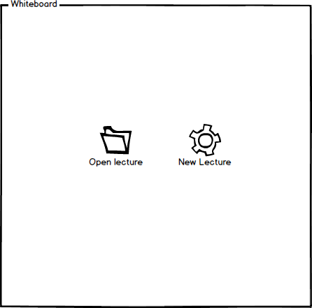
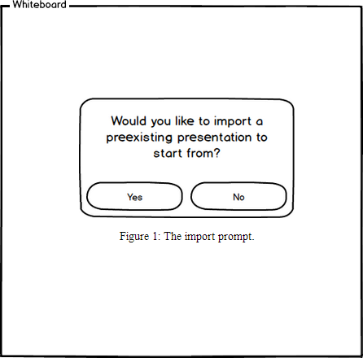
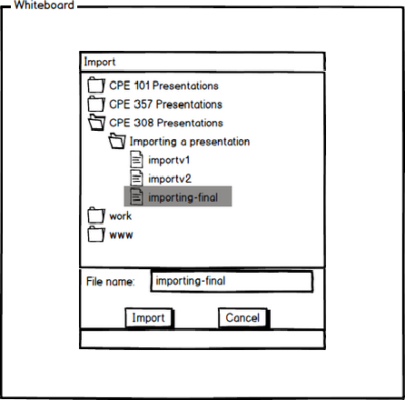

2.3. Presenting With Electronic Classroom
The scenarios in this section show a user presenting in three ways:
When the application is first presented, the electronic whiteboard will be empty
and the presenter is prompted to either (1) open an existing lecture or
(2) create a new lecture.

Figure 1: Initial Screen.
Let's assume the presenter chooses option 1, and is now prompted to select a lecture.

Figure 2: Prompt to load a lecture.
The presenter can now select yes, and select a lecture to use. Or select no
to return to the previous screen.

Figure 3: Prompt to select a lecture.
Prev: preparing-a-presentation
| Next: viewing-a-presentation
| Up: functional
| Top: index